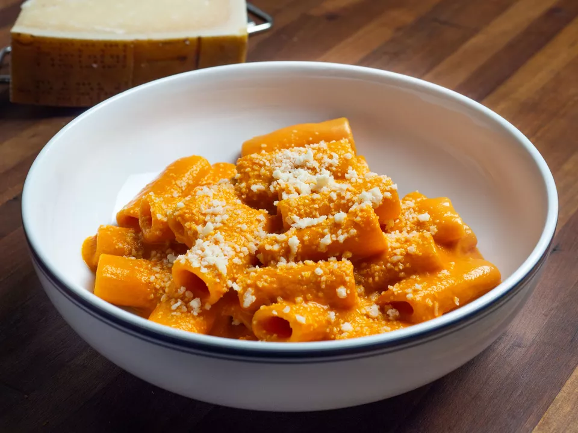

Pasta with Vodka Sauce

Ingredients
- 3 tablespoons (45g) unsalted butter
- 1 medium (8-ounce; 225g) yellow onion, diced
- 3 medium cloves garlic
- Pinch red pepper flakes
- Kosher salt
- One 4 1/2-ounce (130g) tube concentrated tomato paste or 6-ounce (170g)
can tomato paste
- One 14 1/2-ounce (411g) can whole peeled tomatoes
- 1 cup (240ml) heavy cream
- 1 pound (450g) short tubular pasta, such as rigatoni or penne
- 1/4 cup (60ml) vodka, plus more if desired
- 2 ounces (55g) grated Parmigiano-Reggiano, plus more for serving
Instructions
-
In a large (3- or 4-quart) saucepan or small Dutch oven, melt butter over medium heat.
Add onions, garlic, and red pepper flakes, season lightly with salt, and cook,
stirring frequently, until onions are very soft but not browned, about 15 minutes;
lower heat if needed to prevent browning.
-
Add tomato paste and cook, stirring, until tomato paste is fragrant and thick, about 3 minutes.
Stir in canned tomatoes with their liquid. Bring to a simmer, then cook, stirring often and
crushing the whole tomatoes roughly with a spoon, until sauce has thickened slightly,
about 10 minutes.
-
Add cream, and stir to incorporate. Transfer sauce to a blender, and blend until very smooth
(you may be able to make an immersion blender work, but in our tests the sauce level was too
low to safely avoid splattering). Wipe out pot, then return blended sauce to it.
Season lightly with salt.
-
In a medium pot of salted boiling water, cook pasta until just shy of al dente, about 3 minutes
less than the package directs. About 1 minute before you transfer pasta to sauce, add vodka to
tomato sauce and bring to a gentle simmer over medium heat.
-
Using a spider skimmer or slotted spoon, transfer pasta directly to sauce pot along with 1/2 cup (120ml)
pasta water (alternatively, reserve 2 cups pasta water, then drain pasta in a colander, then add to sauce
with 1/2 cup of the reserved water). Increase heat to high, and cook, stirring constantly, until pasta
is well coated in sauce and reaches the al dente stage, about 3 minutes. If sauce thickens too much before
pasta is ready, add more pasta water in 1/4 cup (60ml) increments as needed.
-
Remove from heat and stir in cheese until thoroughly incorporated into a smooth and creamy sauce.
Taste for salt, and season with more if needed. If you can't detect the vodka at all, you can add a few
drops more and stir it in before serving; exactly how boozy you want the sauce is a question of taste, but
be careful because a heavy hand will ruin the dish. Spoon pasta and sauce onto warmed serving plates and top
with additional grated cheese. Serve immediately.